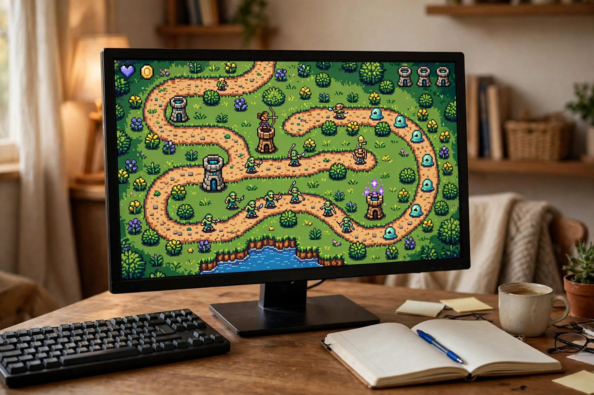

Depot Gato
2D tower defense game with wave spawning, placement mechanics, and pixel art

Overview
Depot Gato is a 2D tower defense game built in Godot 4 using GDScript. Waves of enemies follow a navigation path toward a central depot, and the player places cat-themed towers along buildable tiles to intercept and eliminate them before they arrive. The project was built from scratch to explore Godot's scene composition model, signal-based decoupled architecture, and NavigationAgent2D-driven pathfinding.
Core systems include a wave spawning manager driven by configurable WaveData resources, three distinct tower types with independent attack ranges and damage profiles, enemy pathfinding via NavigationAgent2D with a live HP bar and animated states, a currency economy that rewards kills and gates tower placement, and a central GameState autoload singleton that brokers win and lose conditions through Godot signals.
Tech Stack
- Godot 4, game engine, scene tree, physics layers, CanvasLayer UI
- GDScript, all game logic: towers, enemies, wave manager, game state
- NavigationAgent2D, dynamic pathfinding and steering for enemies
- TileMap, path tiles and buildable zones; grid snapping for tower placement
- Area2D, tower detection radius; projectile hit detection
- AnimationPlayer, enemy walk, hurt, and death animations
- Aseprite, pixel art sprite sheets, exported as PNG sprite atlases
- Git, version control
Scene & System Architecture
The game is structured around Godot's composable scene tree. The root Main.tscn owns the TileMap, the HUD CanvasLayer, and the WaveManager node. Each gameplay entity (enemies and towers) is a self-contained scene instanced at runtime. A GameState autoload singleton acts as a shared data bus, no node directly queries another node's state; instead, all components emit and subscribe to signals.
Build Process
-
01
Project Setup and Physics Layers
Created a new Godot 4 project with a 2D scene root. Configured three named physics collision layers in Project Settings: Layer 1 for enemies, Layer 2 for towers, and Layer 3 for projectiles. This separation ensures that
Area2Dnodes on towers only detect the enemy layer, preventing false collision signals. Set pixel art import defaults globally: Filter set to Nearest, mipmaps disabled, and Snap 2D Transforms to Pixel enabled under Rendering settings to eliminate sub-pixel blurring on scaled sprites. -
02
TileMap and NavigationRegion2D Pathfinding
Designed the TileMap with two layers: a path layer (tiles enemies traverse) and a buildable layer (tiles where towers may be placed). Added a
NavigationRegion2Dnode covering the path layer and baked the navigation mesh. A known pitfall here is thatNavigationRegion2D.bake_navigation_polygon()must be deferred to the next frame after the scene is fully loaded, calling it on_ready()directly caused enemies to spawn before the mesh was valid, placing them inside walls. The fix:call_deferred("_bake_nav"). -
03
Enemy Scene
Each enemy is a
CharacterBody2Dscene with three child nodes: aNavigationAgent2Dfor steering, aProgressBarpositioned above the sprite for the HP bar, and anAnimationPlayerwith three named animations, walk, hurt, and death. TheEnemy.gdscript callsnavigation_agent.get_next_path_position()each physics frame and drives movement withmove_and_slide(). On reaching the depot (checked viaNavigationAgent2D.is_navigation_finished()), the script emits areached_depotsignal caught byGameState.gd. -
04
Tower System
Tower.gdis a base script inherited by all three tower variants. Each tower has anArea2Dchild sized to its detection radius; thebody_enteredandbody_exitedsignals maintain a livetargets_in_range: Array. ATimernode fires on the attack cooldown interval; the handler selects the first valid target withis_instance_valid(target) and not target.is_queued_for_deletion(), then instances aProjectile.tscnat aMarker2Dspawn point with velocity aimed at the target's position. BasicTower has the shortest range and fastest fire rate; SniperTower has maximum range and high single-target damage; SplashTower uses anArea2Don the projectile itself to hit all enemies within an explosion radius on impact. -
05
Wave Manager
Wave data is stored as
WaveDataresources, custom GodotResourcesubclasses with exported fields: an array of dictionaries specifying enemy scene path, count, and spawn interval.WaveManager.gditerates through the current wave's entries using a spawnTimer. When all enemies in a wave are dead (tracked by a counter decremented via theenemy_diedsignal), the manager emitswave_complete. If no more waves remain, it emitsvictory; otherwise it pauses briefly and begins the next wave. This resource-driven approach makes adding new waves a data-only change without touching code. -
06
UI and HUD
The HUD is a separate
CanvasLayerscene instanced under Main. It holds fourLabelnodes (currency, lives, wave number, next-wave countdown) and a tower placement palette built fromTextureButtonnodes. Labels are updated exclusively throughGameStatesignals,currency_changed(new_val),lives_changed(new_val),wave_changed(wave_num), so the HUD has zero direct references to gameplay nodes. Clicking a palette button sets a selected tower type variable inTowerPlacement.gd, which then listens for mouse input on unbuildable vs. buildable cells.
Game Loop Workflow
The following diagram traces the runtime flow of a single round: from the player placing a tower through enemy spawning, combat resolution, and terminal win/lose branching.
Enemy State Machine
Each enemy instance transitions through four states managed in Enemy.gd. The state variable gates which AnimationPlayer track plays and whether movement logic runs each physics frame.
In the Idle state the enemy waits for NavigationAgent2D.set_target_position() to be called by WaveManager immediately after spawning. Once the path is ready the state flips to Walking and the walk animation loops. Attacking is entered if the enemy reaches the depot node or steps into a melee-range trigger (reserved for a melee enemy variant). Dead plays the death animation and then calls queue_free(), which is caught by WaveManager's enemy counter to track wave completion.
Challenges & Solutions
-
NavigationAgent2D jitter at path corners. Enemies visibly oscillated when rounding tight corners because the agent re-targeted the same waypoint on alternating frames. Fixed by increasing both
path_desired_distanceandtarget_desired_distanceon the agent, giving the steering system a wider acceptance radius so it advances to the next waypoint cleanly. -
Towers targeting enemies about to die. When two towers selected the same low-HP enemy simultaneously, one projectile was wasted on a body already queued for deletion. Solved by wrapping all target reads in
is_instance_valid(target) and not target.is_queued_for_deletion()before firing, and clearing the target slot when an enemy emits itsdiedsignal. - Pixel art appearing blurry after scaling. Godot 4's default texture filter is Linear, which interpolates between pixels and softens low-resolution sprites. Fixed globally by setting the project-wide texture import default to Filter: Nearest and enabling Rendering > 2D > Snap 2D Transforms to Pixel, which locks sprite positions to whole pixel coordinates and eliminates sub-pixel shimmer during movement.
-
Enemies spawning inside walls after navigation bake. Calling
NavigationRegion2D.bake_navigation_polygon()synchronously in_ready()completed before the TileMap nodes had fully initialized their collision shapes for the frame. Solved withcall_deferred("_bake_nav")so the bake runs at the start of the next frame after all nodes are settled, ensuring enemies always spawn on a valid navigation mesh.
What I Learned
- Godot 4 scene composition, designing reusable, self-contained scenes and instancing them at runtime vs. placing them statically in the editor tree.
- NavigationAgent2D pathfinding and steering, baking navigation meshes, setting target positions, reading next path positions per physics frame, and tuning desired-distance thresholds.
- Signal-based decoupled architecture, emitting named signals from gameplay nodes and subscribing in the HUD and game state manager, so no node holds a hard reference to another's internal state.
- Autoload singletons for shared state, using Godot's autoload system to create a globally accessible
GameStatethat owns lives, currency, and wave data without coupling scene nodes to each other. - Pixel art workflow from Aseprite to Godot, authoring animations in Aseprite, exporting sprite sheets with JSON metadata, and configuring Godot's SpriteFrames resource to map sheet regions to named animation tracks.
- Tower defense game loop fundamentals, balancing economy (kill reward vs. tower cost), tuning attack cooldown and range per tower class, and designing wave data to create escalating difficulty without hardcoding values.
How I Built It
The full step-by-step build process is documented above in the Build Process section; this is the same story in chronological order, at a higher altitude.
A new Godot 4 project with a 2D root and three named collision layers: enemies, towers, projectiles. Tower Area2D nodes only detect the enemy layer, so no false collision signals. Pixel-art import defaults set globally: Nearest filter, no mipmaps, Snap 2D Transforms to Pixel.
Two TileMap layers, one for the path and one for buildable tiles, with a baked NavigationRegion2D over the path. The bake had to be deferred past _ready() with call_deferred, or enemies spawned inside walls on the first frame.
Each enemy is a CharacterBody2D with a NavigationAgent2D for steering, an HP ProgressBar, and an AnimationPlayer with walk, hurt, and death animations. Reaching the depot emits a reached_depot signal caught by the GameState autoload.
A Tower.gd base script inherited by three variants: basic, sniper, splash. An Area2D maintains the live targets list, a Timer drives the attack cooldown, and projectiles spawn at a Marker2D. Every target read is guarded with is_instance_valid and is_queued_for_deletion checks.
WaveData resources hold enemy scene paths, counts, and spawn intervals, so adding a wave is a data-only change with no code edits. Wave completion and victory flow through signals into GameState.
A separate CanvasLayer scene holding currency, lives, wave counter, and the tower placement palette. Labels update exclusively through GameState signals, so the HUD has zero direct references to gameplay nodes.
What You Need
| Category | Item | Notes |
|---|---|---|
| Hardware | Any PC that runs Godot 4 | No special requirements; the game is 2D pixel art |
| Software | Godot 4, GDScript (built in), Aseprite for sprite sheets, Git for version control | All free or low cost; the Build Process section above documents the exact APIs used |
| Skills | Basic programming, 2D game concepts (scenes, signals, physics layers) | Godot's documentation covers the rest; this project is a reasonable first Godot game |
| Accounts | None required | itch.io is the natural free home if the game gets published |
Challenges and Lessons Learned
- Navigation timing bugs are frame-order bugs. The navmesh bake completing before TileMap collision shapes initialized was fixed by deferring one frame. The lesson: _ready() order is not a guarantee, and anything that depends on the whole scene being settled should run a frame later.
- Steering jitter at corners. Enemies visibly oscillated rounding tight corners because the agent re-targeted the same waypoint on alternating frames. Increasing path_desired_distance and target_desired_distance gave the steering a wider acceptance radius so it advances to the next waypoint cleanly.
- Wasted projectiles on dying enemies. Two towers selecting the same low-HP target wasted a shot on a body already queued for deletion. Solved by wrapping every target read in is_instance_valid(target) and not target.is_queued_for_deletion(), and clearing the target slot when an enemy emits its died signal.
- Pixel blur from defaults. Godot 4's default Linear texture filter interpolates between pixels and softens low-resolution sprites. Project-wide Nearest filtering plus Snap 2D Transforms to Pixel locked sprites to whole pixel coordinates.
- Balancing is data design. Kill rewards, tower costs, and wave composition live in resources, so difficulty tuning never requires code changes. That separation paid for itself the first time a wave felt too easy.
What Is Next
- More tower types and enemy variants; a melee attacker is already reserved in the enemy state machine.
- Additional maps and tilesets beyond the first TileMap.
- Sound effects and music.
- Difficulty balancing driven by playtesting data rather than gut feel.
- A published build on itch.io, and longer term, mobile export.